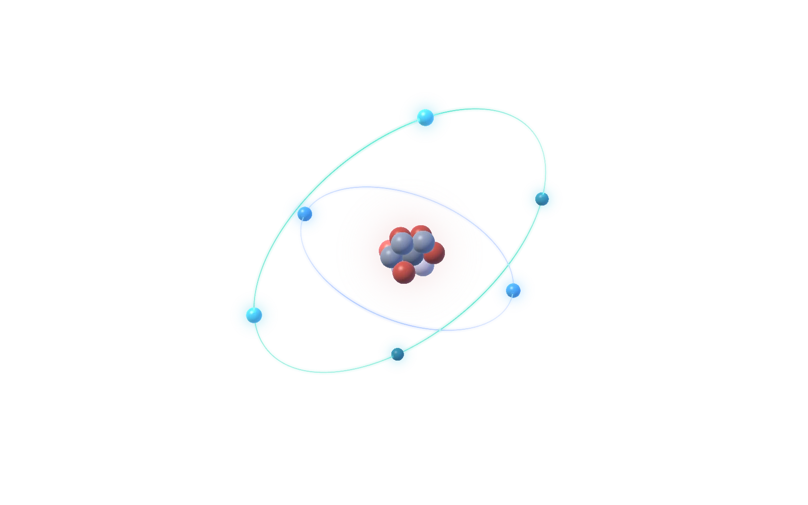

Bài thực hành · Tổ 3
URANIUM
-235
Mô hình nguyên tử 3D: 92 proton · 143 neutron · 92 electron
KiệtTàiThảo NguyênHùngXuân Bảo NgọcTiến PhátNhiênTrúcHânNgười bị gãy tay

Proton (+)
Neutron
Electron (-)
n=1 (K): 1 electron
Proton
ProtonNeutronElectronLớp hóa trị
Phím tắt
- RĐặt lại góc nhìn
- LBật hoặc tắt nhãn
- 1 - 2Chế độ Bohr hoặc obitan
- SpaceTạm dừng hoặc tiếp tục xoay
- EscĐóng thẻ, thoát hướng dẫn hoặc đố vui
Hoàn thành mục tiêu: bạn đã tạo hiđro-1.
Mô hình nguyên tử dựa trên 33Science (CC BY 4.0). Dữ liệu: PubChem, IAEA, NIST.